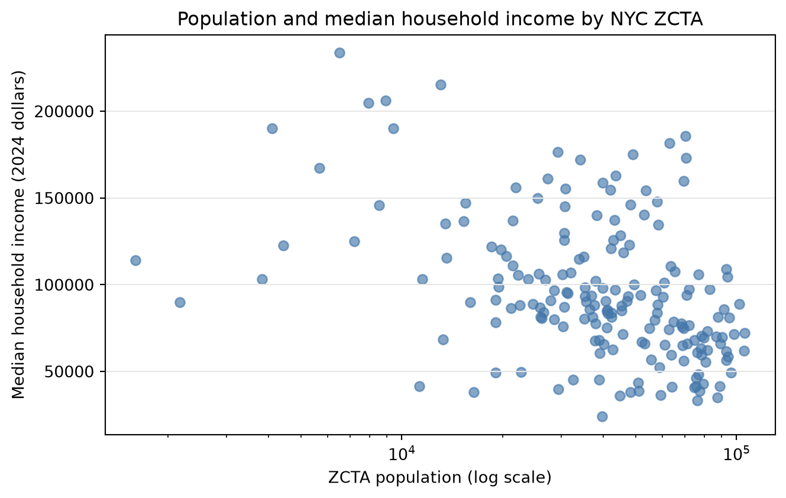
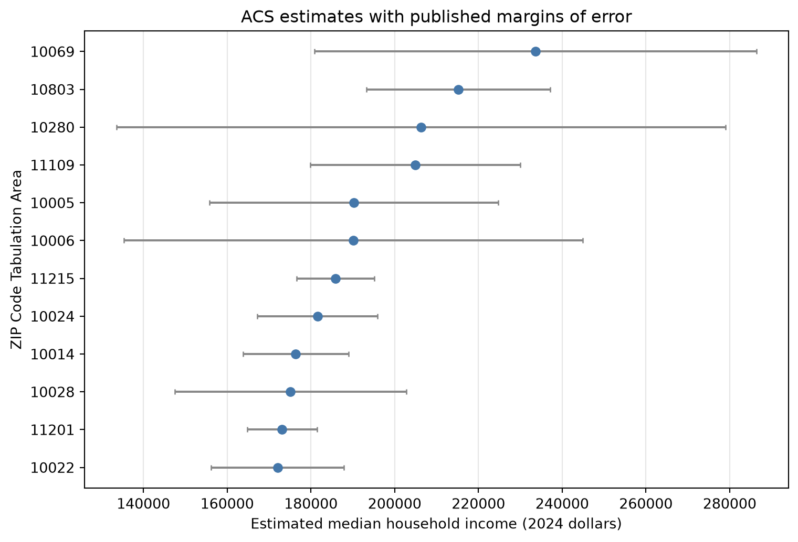
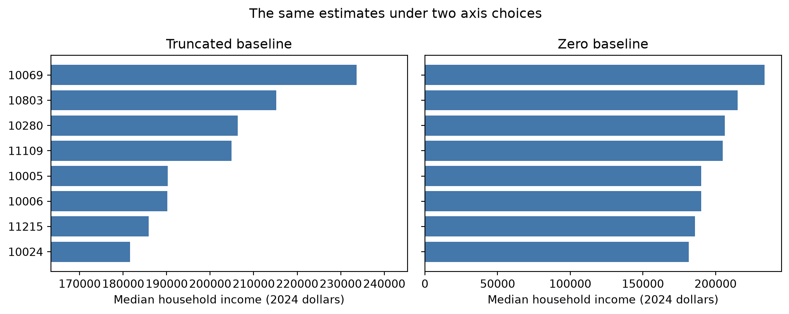

Visualization is a method for examining data, checking analytical choices, diagnosing models, and communicating evidence. The same graphic can serve more than one purpose, but its design should reflect the task at hand: an analyst may need to reveal unexpected structure, while a reader may need to compare a small number of estimates accurately. This chapter develops principles for making those choices and applies them to Census area estimates and other New York City open data. Chapter 7 used plots as one part of exploratory data analysis; this chapter examines how visual encodings shape what analysts and readers can see. Chapter 9 will use the same principles for model checking, interpretation, and prediction. Chapter 5 defined questions and the claims their evidence can support, Chapter 6 prepared analysis tables, and Chapter 7 used plots to investigate distributions and relationships. This chapter builds on that sequence without treating visualization as the final step of an analysis.
8.1 Match the Display to the Task
The first design decision is the question the display must help answer. Exploration often begins with an open question, such as whether two variables vary together or whether a distribution has more than one cluster. A communication display usually has a more specific task, such as comparing group estimates or showing the change in a measure over time. Both tasks require the analyst to identify the observational unit, the variables, their measurement scales, and the evidence behind them. These requirements connect visualization to the domain, measurement, scope, and evidence checks in Section 5.1. A graph can encode values correctly and still support an incorrect conclusion if the question, units, or population are unclear. Task-oriented frameworks make this design process explicit by asking what data are available, why a display is needed, and how it should represent the data (Munzner, 2014).
A useful way to describe a statistical graphic is through its data, mappings, marks, scales, and layout. The data are the observations to display; a mapping assigns variables to visual properties; marks are the visible elements such as points, lines, and bars; scales translate data values to positions, sizes, or colors; and layout arranges panels, labels, and legends. This vocabulary is shared across visualization systems. Wickham’s layered grammar formalizes these components and is implemented by ggplot2 in R, while this book uses Matplotlib in Python (Wickham, 2010). Wilke’s practical treatment offers a companion reference for applying these design ideas in statistical graphics (Wilke, 2019). The code below uses a scatterplot to map ZCTA population to horizontal position and median household income to vertical position. It uses one point per area, so the observational unit remains visible rather than being replaced by an unexplained aggregate.
from pathlib import Pathimport matplotlib.pyplot as pltimport pandas as pdzcta_context = pd.read_csv( Path("data") /"zcta_context.csv", dtype={"zcta": "string"},)income_areas = zcta_context.loc[ zcta_context["median_household_income"].notna()&~zcta_context["median_household_income_top_coded"]].copy()fig, ax = plt.subplots(figsize=(7, 4.5))ax.scatter( income_areas["population"], income_areas["median_household_income"], alpha=0.65, color="#4477aa",)ax.set_xscale("log")ax.set( xlabel="ZCTA population (log scale)", ylabel="Median household income (2024 dollars)", title="Population and median household income by NYC ZCTA",)ax.grid(axis="y", color="0.9")fig.tight_layout()plt.show()

Figure 8.1: Population and 2020–2024 ACS median household income estimates for NYC ZCTAs; income values top-coded by the source are excluded.
This plot supports several exploratory tasks: identifying unusual areas, checking whether income varies systematically with population, and deciding whether a transformation or additional stratification is warranted. The logarithmic population scale allocates more display space to differences among smaller ZCTAs; it also changes how horizontal distances should be interpreted, so the axis label states the scale. The scatterplot does not establish that population explains income, and each point is an area rather than a resident. The estimates come from the 2020–2024 American Community Survey and describe ZCTAs selected from the city’s published geography list; postal ZIP Codes and ZCTAs are not identical (NYC Open Data, 2026c; U.S. Census Bureau, 2026). A display should retain these units and reference periods in its caption or accompanying text, especially when those details change the scope of the conclusion.
8.2 Encode Comparisons and Uncertainty
Visual channels differ in how accurately people can compare values. Experiments in graphical perception find that position along a common scale and length generally support more accurate comparisons than area, volume, or color intensity (Cleveland & McGill, 1984; Mackinlay, 1986). This evidence explains why aligned dot plots and bars work well for comparing a modest number of values, while a bubble chart can make close values difficult to distinguish. The appropriate channel also depends on the variable: color hue distinguishes categories, while ordered lightness is better suited to quantitative magnitude. Color should not carry information by itself when shape, line style, direct labels, or position can make the same distinction available through another channel. Perceptually uneven palettes can distort gradients, and color choices that depend on red-green differences can exclude some readers (Crameri et al., 2020). Researchers can also test perceptual claims rather than accept them only as convention. Heer and Bostock used crowdsourced experiments to reproduce established results and evaluate design choices (Heer & Bostock, 2010). Their work supports treating design principles as evidence-based guidance while recognizing that a channel’s effectiveness still depends on the comparison and audience.
Uncertainty is part of the data description when estimates come from a sample or a model. The ZCTA file includes American Community Survey margins of error for its estimates; the following figure displays estimates and their published margins for the twelve areas with the largest non-top-coded median household income. This is an interval display, not a ranking of exact underlying incomes. ACS margins of error describe sampling uncertainty, not all possible sources of measurement or coverage error. The dataset also marks four top-coded income estimates and does not supply exact numeric values for them, so those areas are omitted from this particular plot and the exclusion is explicit in the code. The Census Bureau bases published ACS margins on a 90% confidence level (U.S. Census Bureau, 2024). These distinctions affect how readers compare areas and interpret the displayed ranking.
top_income = income_areas.nlargest(12, "median_household_income").sort_values("median_household_income")fig, ax = plt.subplots(figsize=(8, 5.5))ax.errorbar( top_income["median_household_income"], top_income["zcta"], xerr=top_income["median_household_income_moe"], fmt="o", color="#4477aa", ecolor="#888888", capsize=2,)ax.set( xlabel="Estimated median household income (2024 dollars)", ylabel="ZIP Code Tabulation Area", title="ACS estimates with published margins of error",)ax.grid(axis="x", color="0.9")fig.tight_layout()plt.show()

Figure 8.2: Twelve largest non-top-coded 2020–2024 ACS median household income estimates among NYC ZCTAs, with published 90% margins of error.
Intervals require a definition and should not be treated as decorative whiskers. These published margins communicate sampling uncertainty for each estimate, but overlap alone is not a formal test of a difference between two areas. Experiments identify a within-the-bar bias: viewers can judge values inside a bar’s filled region as more likely than values outside it even when error bars display uncertainty. Point-and-interval or distribution displays may therefore communicate inferential comparisons more effectively than a bar with error bars (Correll & Gleicher, 2014). The caption and surrounding text should state what the interval represents. Other displays, such as distributions of bootstrap estimates, may suit different inferential tasks. Chapter 7 introduced resampling uncertainty for a comparison; here the focus is on making the uncertainty visible and identifying its source. Chapter 9 will return to visual uncertainty when it examines the variability of predictions and model estimates. A clear caption helps prevent uncertainty marks from being mistaken for the range of observed values.
8.3 Read and Revise a Graphic
Axes, labels, scales, and context determine what a comparison appears to say. A bar encodes a value through length, so a zero baseline is normally needed when the length is intended to represent the full magnitude. A line chart encodes change through position and slope, so a restricted vertical range can be appropriate when it exposes variation that would otherwise be compressed; the range and its effect must remain apparent. Experiments on axis truncation show why a single rule does not cover every chart type or task (Correll et al., 2020). Other risky choices include 3D perspective that changes apparent area, a dual axis that invites unsupported comparisons, unordered categories, omitted denominators, and aggregation that hides variation. These choices become misleading when they cause a reader to infer a comparison the data or design do not support, not simply because a chart violates a style preference (Pandey et al., 2015).
The next display uses the same ZCTA income values twice to show how an axis baseline changes the visual impression of a bar chart. The left panel starts above zero and magnifies differences in bar length; the right panel starts at zero and makes the full encoded magnitudes comparable. The first view is a deliberate counterexample for this task, not evidence that every nonzero axis is misleading. A line graph of the same values could use a restricted range to reveal small changes, provided its purpose and scale were clear. Tufte’s work on graphical integrity remains an influential source for examining distortion, but later empirical work cautions against treating minimalism or any one visual rule as universally optimal (Bateman et al., 2010; Tufte, 2001).
example_areas = income_areas.nlargest(8, "median_household_income").sort_values("median_household_income")income_values = example_areas["median_household_income"]income_labels = example_areas["zcta"]fig, axes = plt.subplots(1, 2, figsize=(10, 4), sharey=True)axes[0].barh(income_labels, income_values, color="#4477aa")axes[0].set_xlim(income_values.min() *0.9, income_values.max() *1.05)axes[0].set_title("Truncated baseline")axes[1].barh(income_labels, income_values, color="#4477aa")axes[1].set_xlim(0, income_values.max() *1.05)axes[1].set_title("Zero baseline")for ax in axes: ax.set_xlabel("Median household income (2024 dollars)")fig.suptitle("The same estimates under two axis choices")fig.tight_layout()plt.show()

Figure 8.3: The same eight ZCTA income estimates shown with a truncated and a zero baseline. The truncated baseline magnifies differences in bar length.
A review should test whether a reader can identify the unit, comparison, and scale without guessing. Titles should state the subject or claim, axes should include units, categories should follow an order that supports the task, and captions should identify the source, period, and important exclusions. A legend should be close to the encodings it explains; direct labels or small multiple panels can reduce the effort of comparing several series. Grid lines and annotations should aid value reading without competing with the data. Accessibility also requires that distinctions remain legible when color is unavailable or perceived differently. Check contrast, avoid using color as the sole distinction, and provide a concise text description that states the main pattern and relevant scale. A chart can be visually polished while remaining analytically weak if it leaves these interpretive conditions implicit.
8.4 Visualization in Exploration, Modeling, and Communication
The same design principles support different stages of analysis, but the displays need not be identical. During EDA, small multiples, residual plots, and distributional views can expose structure or anomalies that were not anticipated. During data validation, plots can reveal impossible values, coding changes, missingness patterns, or geographic gaps. For communication, the analyst may reduce competing detail, add direct labels, and state the main comparison while preserving the variation needed to interpret it. These different decisions follow from the task and audience, not from an opposition between analysis and presentation. The transition from exploration to explanation should not remove inconvenient observations or uncertainty. It should make the analytical purpose more explicit and retain sufficient detail for the reader to assess the claim. An exploratory figure may also be revised as the question becomes more specific or the intended audience changes. Selecting a display that represents the evidence and uncertainty accurately is also part of responsible statistical communication; Chapter 10 develops the ethical obligations that govern these choices (American Statistical Association, 2022).
NYC Open Data offers useful settings for practicing these distinctions. The Motor Vehicle Collisions dataset records dates, locations, boroughs, and injury counts, so it can support time-series, geographic, and categorical comparisons; its documentation cautions that records are preliminary and may be amended (NYC Open Data, 2026a). The Parks Inspection Program records inspection dates and ratings, which support comparisons across inspection seasons, years, or park properties (NYC Open Data, 2026b). Those units and collection processes differ from service requests and ACS estimates, so students should read each data dictionary before plotting. A map of collision points, for example, answers a location question but does not by itself compare risk unless exposure or an appropriate denominator is also considered. The collision dataset’s row is a reported collision, whereas the Parks inspection dataset’s row is an inspection; neither row is equivalent to a person’s experience of a crash or a park. These examples therefore support practice with data provenance and measurement as well as with chart design.
Visualization also carries into predictive modeling. A model’s residual plot can reveal systematic errors that a single accuracy statistic conceals, and predicted-versus-observed displays can show whether predictions are calibrated across the range of outcomes. Such plots are diagnostics rather than proof that a model will perform well on future data; their interpretation depends on the evaluation design and data scope. Chapter 9 will define the target, training and test data, and performance measures before developing these model-specific views. The present chapter provides their visual foundation: map variables to channels that suit the task, state scales and units, display relevant uncertainty, and evaluate whether the figure supports the intended claim. A diagnostic graphic can suggest where a model fails, but only a suitable evaluation design can establish how well it predicts observations that were not used to fit it. This distinction keeps the visual evidence aligned with the predictive question and prepares readers to interpret the model comparisons in the following chapter.
Exercises
Use the distributed data where specified. For NYC Open Data exercises, record the dataset title, identifier, access date, row unit, filters, and any changes made to the downloaded source. For every display, state the analytical task, the visual encodings, the observational unit, and one limitation on interpretation. Submit the code and a rendered figure with your written responses.
8.1 Examine population and median household income across NYC ZCTAs using data/zcta_context.csv.
Construct a scatterplot and describe the variables mapped to each visual channel. Compare a linear population axis with a logarithmic population axis, and state which exploratory question each version makes easier to inspect.
Identify two areas that appear unusual relative to the overall pattern. Check their values and margins of error in the data before interpreting their positions.
Explain why the relationship cannot be interpreted as an individual-level income effect or as a causal effect of population.
8.2 Revise the ZCTA income interval display.
Display estimates and published margins of error for ten areas chosen by a rule you state in advance. Identify the confidence level represented by the Census margins and explain the treatment of top-coded values.
Create a second version that uses a different ordering or annotation. Explain which comparison becomes easier and which information becomes less prominent.
Explain why interval overlap alone does not establish whether two population quantities differ.
8.3 Use the NYC Motor Vehicle Collisions dataset, identified as h9gi-nx95 in NYC Open Data (NYC Open Data, 2026a). Choose one date range and one well-defined outcome, such as crashes per month or crashes involving an injury.
Produce an exploratory display for a question about time, borough, or location. State the row unit and explain how missing locations or values affect the eligible records.
Create a deliberately flawed alternative by changing one design decision, such as the axis baseline, aggregation, scale, or denominator. Explain the inference that the alternative could encourage and why it is unsupported.
Revise the display for communication. Include a descriptive title, units, source and period, and a text description of the principal pattern.
State why a count of collisions by area is not automatically a measure of collision risk.
8.4 Use the Parks Inspection Program – Inspections dataset from NYC Open Data (NYC Open Data, 2026b). Read its data dictionary before selecting variables.
Ask a question comparing an inspection rating over time or across park properties. Specify the observational unit and construct a display suited to that comparison.
Make one alternative display that changes the visual encoding. Compare how accurately a reader can recover the values and whether either display conceals differences in inspection counts.
Write a caption that separates what the inspection records show from what they do not establish about park users’ experiences or conditions between inspections.
8.5 After completing Chapter 9, use one fitted model with a continuous outcome to construct a predicted-versus-observed plot and a residual plot.
Define the prediction target and the data used to produce predictions. Use held-out predictions if the goal is to assess performance on new observations.
Identify one pattern in each plot that would suggest a problem with the model. Explain why a plot of training predictions alone could give an overly favorable assessment.
Write a short caption that states what the plots diagnose and what they cannot establish about future performance.
Bateman, S., Mandryk, R. L., Gutwin, C., Genest, A., McDine, D., & Brooks, C. (2010). Useful junk? The effects of visual embellishment on comprehension and memorability of charts. Proceedings of the SIGCHI Conference on Human Factors in Computing Systems, 2573–2582. https://doi.org/10.1145/1753326.1753716
Cleveland, W. S., & McGill, R. (1984). Graphical perception: Theory, experimentation, and application to the development of graphical methods. Journal of the American Statistical Association, 79(387), 531–554. https://doi.org/10.1080/01621459.1984.10478080
Correll, M., Bertini, E., & Franconeri, S. (2020). Truncating the Y-axis: Threat or menace? Proceedings of the 2020 CHI Conference on Human Factors in Computing Systems. https://doi.org/10.1145/3313831.3376222
Correll, M., & Gleicher, M. (2014). Error bars considered harmful: Exploring alternate encodings for mean and error. IEEE Transactions on Visualization and Computer Graphics, 20(12), 2142–2151. https://doi.org/10.1109/TVCG.2014.2346298
Crameri, F., Shephard, G. E., & Heron, P. J. (2020). The misuse of colour in science communication. Nature Communications, 11, 5444. https://doi.org/10.1038/s41467-020-19160-7
Heer, J., & Bostock, M. (2010). Crowdsourcing graphical perception: Using mechanical turk to assess visualization design. Proceedings of the SIGCHI Conference on Human Factors in Computing Systems, 203–212. https://doi.org/10.1145/1753326.1753357
Mackinlay, J. D. (1986). Automating the design of graphical presentations of relational information. ACM Transactions on Graphics, 5(2), 110–141. https://doi.org/10.1145/22949.22950
Pandey, A. V., Rall, K., Satterthwaite, M. L., Nov, O., & Bertini, E. (2015). How deceptive are deceptive visualizations? An empirical analysis of common distortion techniques. Proceedings of the 2015 CHI Conference on Human Factors in Computing Systems, 1469–1478. https://doi.org/10.1145/2702123.2702608
Tufte, E. R. (2001). The visual display of quantitative information (2nd ed.). Graphics Press.
Wilke, C. O. (2019). Fundamentals of data visualization: A primer on making informative and compelling figures. O’Reilly Media. https://clauswilke.com/dataviz/